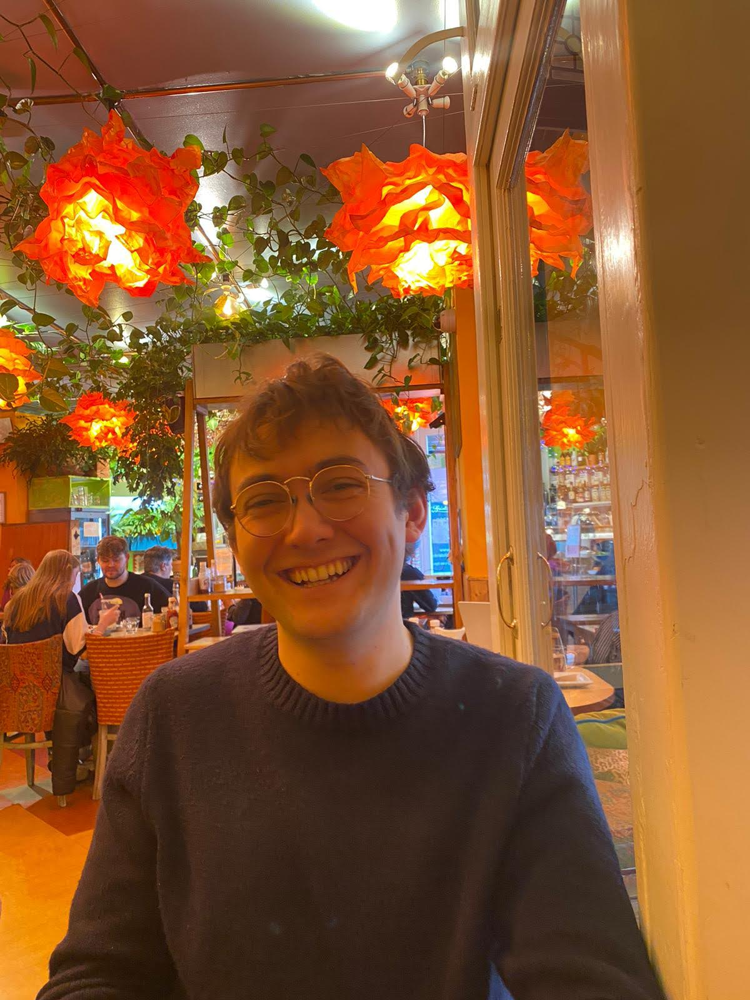

Babissimo
Projects
About Me

Alexander
Charters
LinkedIn
Github
N
π
∑
√2
∫
∞
e
iπ
= −1
’17
’18
’19
’20
’21
’22
’23
’24
’25
’26
The Voyage So Far
AC
???
What comes next
Future
Offworld Labs
Full-stack engineer
·
’26
Message Matrix
Backend engineer
·
’25–’26
Travel, teaching and odd jobs
Adventurer
·
’24–’25
University of Oxford
Student
·
’20–’24
Exeter Maths School
Student
·
’17–’19
Here lay dragons